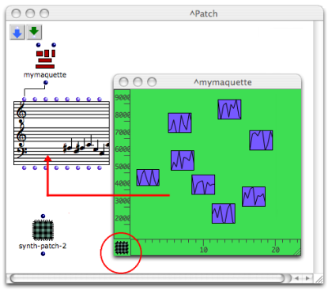
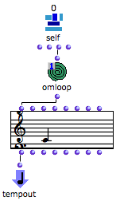
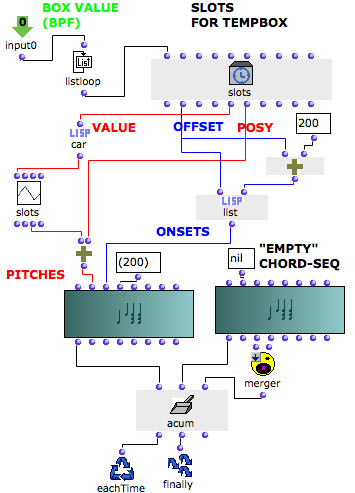
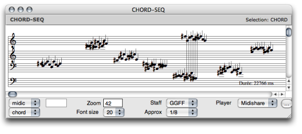

OpenMusic DocumentationHiérarchie de section : OM 6.6 User Manual > Maquettes > Maquette Programming > The Synthesis Patch > Synthesis Patch Example
OpenMusic DocumentationHiérarchie de section : OM 6.6 User Manual > Maquettes > Maquette Programming > The Synthesis Patch > Synthesis Patch Example
Navigation : page précédente | page suivante
Attention, votre navigateur ne supporte pas le javascript ou celui-ci à été désactivé. Certaines fonctionnalités de ce guide sont restreintes.
Example : Building a Chord-Seq With a Synthesis Patch

This maquette contains several BPFs. The coordinates and temporal position of each BPF is interpreted to produce a corresponding melodic sequence. The sequences are then merged into one chord-seq. The whole process is programmed in a synthesis patch.
Programming the Synthesis Patch
General Program

|
The synthesis patch has been added in the workspace, dropped in the patch editor and assine to the maquette. The synthesis patch has :
The maquette's output returns the chord-seq produced by the synthesis patch. |
OMLoop
The value of the Maquette Self Input is returned to OMLoop's input.
At each step of the loop, listloop returns the value of a TemporalBox to slots. Each of these TemporalBoxes has a value , a vertical position – posy – and a temporal position – offset .
- The value, or coordinates of each BPF are returned to car, which selects the y-points of the BPF. The y-points are returned to the "midic" input of the chord-seq.
- The y-points of the curve are added to the "posy" of the TemporalBox, as for a transposition.
- The offset of the box is returned to om+ and list, which return a list of the type (n (n+200)) to the chord-seq box. There will be a 200 ms interval between each of the chord-seq's items.
At each step of the loop, acum builds a sequence out of the chord-seq and a "blank" chord-seq.
Finally returns the whole sequence to a global chord-seq, which is connected to the Tempout of the synthesis patch.

Inside the OMLoop : building the melodic sequence from the TemporalBoxes parameters.
About Acum and Merger
Acum has three inputs :
- something to collect,
- an initial value,
- a function on "lambda" mode, which determins the behaviour of the acumulator.
Here, merger builds a sequence out of the two chords-seqs. This sequence includes the temporal value of the chord-seqs.
| Merger merges two sequences into one, including their temporal value. As it cannot merge something with "nil", we have assigned a "pseudo" empty chord-seq to the initial value input of acum. |
Resulting Chord-Seq
Once the maquette is evaluated, the result of the synthesis can possibly be visualized with a chord-seq box connected to the maquette's output. When the maquette, or a selected TemporalBox is played, it renders the interpretation of its values by the synthesis patch.

Using the Maquette or Not
Here, as in most cases, the same program can be designed without a maquette, if one is interested in a single abstraction level.
- The maquette empathizes the temporal structure at stake in a process. It gives a global, and somehow intuitive view of this temporal dimension, which can be manipulated with the advantages of its specific graphic interface.
- The maquette provides a temporal representation of a process at a different abstraction level.
- Last, this temporal structure can be reinterpreted in a program.
Références :
Plan :
Navigation : page précédente | page suivante
A propos...(c) Ircam - Centre Pompidou